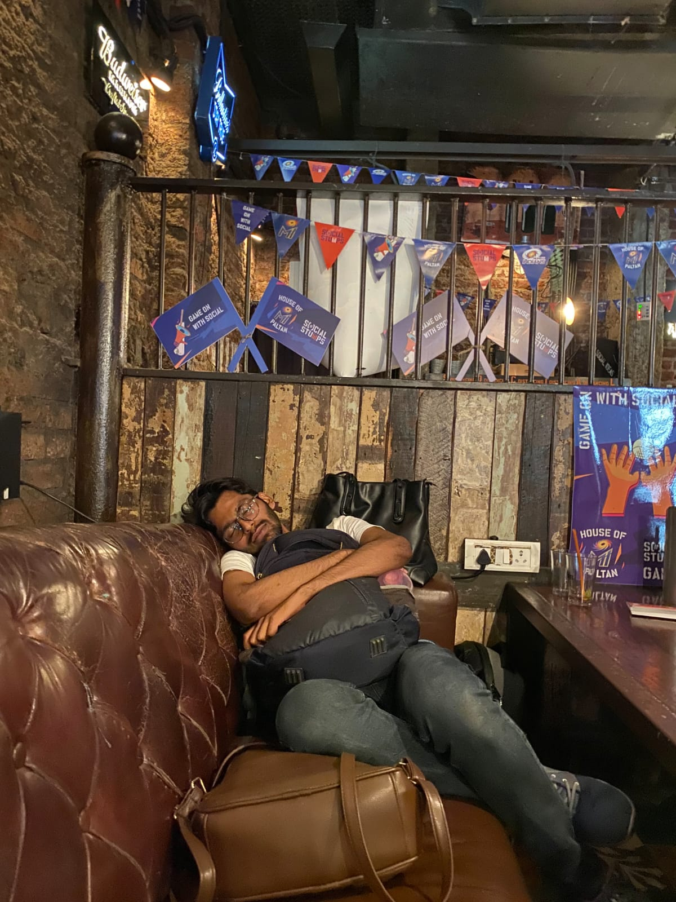

PhD Student · University of Louisville · Physics & Astronomy
Unravelling stories written in starlight — from Young Stellar Objects and their surface spots, to stellar populations across the Magellanic Bridge.
01 — About

I am a PhD student in the Department of Physics and Astronomy at the University of Louisville (Aug 2025 – present), based in Louisville, Kentucky.
My research started from stellar astrophysics then Galactic Astronomy and currently I plan on employing Machine learning tools in the extragalactic regime over the course of my PhD. Besides, everything on here, I like hiking, hiking and HIKING.
I hold an M.Sc. in Physics (Astrophysics) from St. Xavier's College, Mumbai University, India.
02 — Research
My Master's thesis applied interpretable Gaussian Process modelling to infer the latitude distribution, size, number, and contrast of starspots on Young Stellar Objects using TESS lightcurves — working with ensembles of statistically similar stars. Supervised by Dr. Joe Ninan at TIFR, Mumbai.
As a project associate at Ahmedabad University with Dr. Samyaday Choudhury (Aug 2024 – May 2025), I performed a multiwavelength analysis of regions in the Magellanic Bridge to understand star formation histories and the interaction between the Magellanic Clouds.
Compared Decision Tree, Random Forest, Gradient Boosting, kNN, and Voting Classifier algorithms for classifying astronomical objects using SDSS photometric data — exploring where machine learning can augment traditional survey analysis.
03 — Talks & Posters
04 — Curriculum Vitae
05 — Contact
I'm always happy to discuss research ideas, collaboration opportunities, outreach events, or just chat about the cosmos. Feel free to reach out!